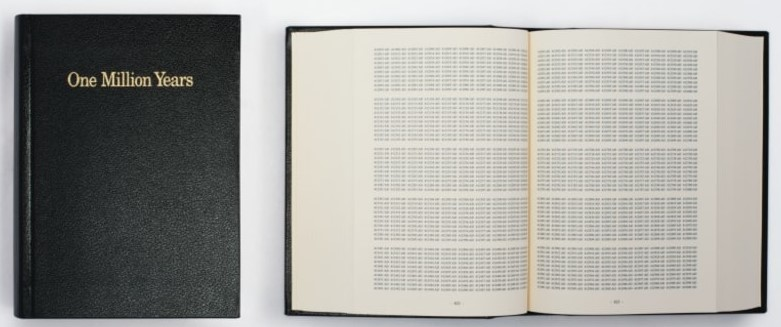

Mit einer künstlerischen Praxis, die Gemälde, Telegramme und Postkarten kombiniert, möchte Kawara den Betrachtern ihren Platz in der Geschichte bewusst machen und dem Vergehen der Zeit eine Art Materialität verleihen. Kawara ist vor allem für seine fortlaufende Today-Serie von Datumsbildern bekannt, die er 1966 begann. Jedes Bild wird an einem einzigen Tag gemalt und enthält nur das handgeschriebene Datum seiner Entstehung. Kawaras Interesse daran, wie unsere Gesellschaft Datumsangaben verwendet, um die Unbestimmbarkeit der Zeit zu erfassen, zeigt sich in dem zweibändigen Buchprojekt One Million Years. Das erste Buch, Vergangenheit, ist "all jenen gewidmet, die gelebt haben und gestorben sind", und umfasst die Jahre von 998.031 vor Christus bis 1969 nach Christus. Das zweite Buch, Zukunft, ist "dem Letzten" gewidmet und beginnt mit dem Jahr 1993 n. Chr. und endet mit dem Jahr 1.001.992 n. Chr.. Auf Wunsch des Künstlers wurden Teile der Bücher an verschiedenen Orten auf der ganzen Welt vorgelesen. Eine Aufzeichnung dieser Lesungen ist Teil von Kawaras Installation hier. Übersetzt mit www.DeepL.com/Translator (kostenlose Version)
